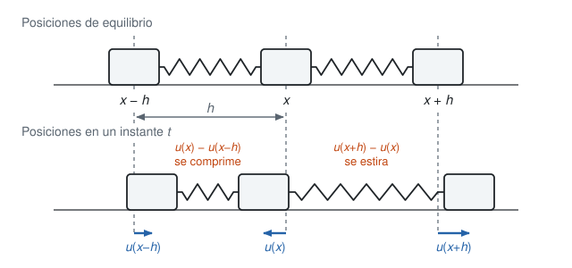
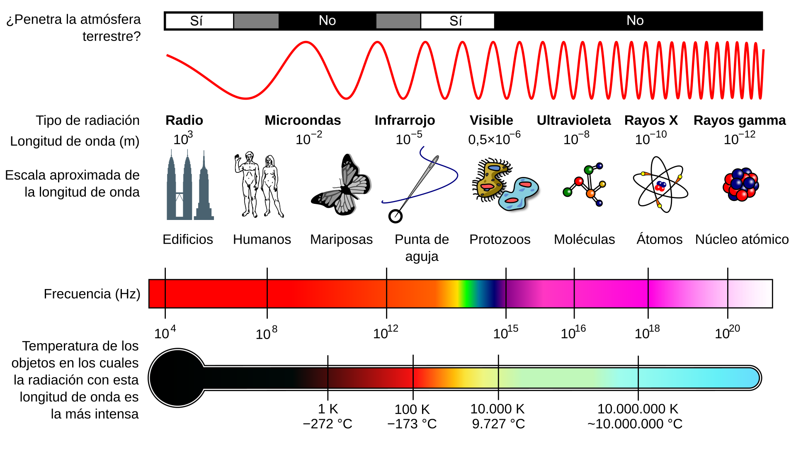

El Oscilador Armónico Cuántico
De osciladores acoplados a la ecuación de onda, la ecuación de Schrödinger y los polinomios de Hermite
Esta sección usa la ecuación de Hermite como destino, pero el camino es largo y vale la pena recorrerlo. Empezamos con una fila de osciladores acoplados, de ahí sale la ecuación de onda, de las ondas sale la relación entre frecuencia, energía y momento, y con eso se llega a la ecuación de Schrödinger. Al final la aplicamos al potencial de un resorte y la resolvemos por series de potencias.
1 Osciladores acoplados
Imaginemos un grupo de personas en fila, agarradas de la mano, jugando a la ola. Cuando el impulso llega de una persona a la otra, esta lo transmite a la vecina, pero cada persona se queda en su sitio. Lo que viaja es la perturbación, no las personas.
Esto es muy similar a acoplar osciladores armónicos con resortes: una fila de bloques de masa \(m\), cada uno unido a sus vecinos por un resorte.
Consideremos entonces infinitos osciladores armónicos acoplados, con el mismo coeficiente de elasticidad \(\kappa\) en todos los resortes y la misma masa \(m\) en cada bloque. (Usamos \(\kappa\) para la constante del resorte y reservamos \(k\) para el número de onda, que aparece más abajo.) Sea \(u_j\) el desplazamiento del bloque número \(j\) respecto de su posición de equilibrio. La Figura 1 muestra tres bloques consecutivos.

Si el bloque \(j\) se desplaza \(u_j\) y sus vecinos se desplazan \(u_{j-1}\) y \(u_{j+1}\), entonces el resorte de la derecha se estira en \(u_{j+1}-u_j\) y el de la izquierda en \(u_j-u_{j-1}\). El resorte derecho jala al bloque hacia la derecha con fuerza \(\kappa(u_{j+1}-u_j)\), y el izquierdo lo jala hacia la izquierda con fuerza \(\kappa(u_j-u_{j-1})\). Por la segunda ley de Newton,
\[m\,\ddot u_j=\kappa\,(u_{j+1}-2u_j+u_{j-1}). \tag{1}\]
La fuerza sobre un bloque depende solo de cómo está respecto de sus dos vecinos. Esa combinación \(u_{j+1}-2u_j+u_{j-1}\) es una segunda diferencia, y es la que nos va a convertir la cadena en una ecuación diferencial parcial.
El tablero integra Ecuación 1 para \(N\) bloques con los dos extremos fijos (método de Verlet, que conserva la energía). Con Pulso se ve cómo una perturbación local se parte en dos y viaja por la cadena. Con Modo n la cadena entera oscila con la forma de un seno, y la información de abajo compara la frecuencia exacta de la cadena con la que predice la ecuación de onda de la siguiente sección. Con Un solo bloque se ve que, si la perturbación es del tamaño del espaciado, el continuo no sirve.
1.1 Del salto discreto a la derivada
Pongamos cada bloque en \(x=jh\), donde \(h\) es la distancia entre bloques en equilibrio, y escribamos \(u(x,t)\) para el desplazamiento del bloque que está en \(x\). Entonces \(u_{j\pm1}=u(x\pm h,t)\) y Ecuación 1 queda
\[m\,u_{tt}(x,t)=\kappa\,\bigl(u(x+h)-2u(x)+u(x-h)\bigr).\]
Para entender el lado derecho cuando \(h\) es pequeño, recordemos que, por el teorema fundamental del cálculo,
\[u(x+h)-u(x)=\int_0^h u'(x+s)\,ds.\]
Como \(u'(x+s)\approx u'(x)+u''(x)\,s\) para \(s\) pequeño (es la aproximación lineal de \(u'\)), obtenemos
\[u(x+h)-u(x)\approx\int_0^h\bigl(u'(x)+u''(x)\,s\bigr)\,ds=u'(x)\,h+\tfrac12u''(x)\,h^2.\]
Esto es el polinomio de Taylor de orden 2. Reemplazando \(h\) por \(-h\),
\[u(x-h)-u(x)\approx-u'(x)\,h+\tfrac12u''(x)\,h^2.\]
Al sumar las dos, el término con \(u'\) se cancela (por eso la fila es simétrica: lo que jala un vecino lo compensa el otro) y queda
\[u(x+h)-2u(x)+u(x-h)\approx u''(x)\,h^2.\]
Entonces \(m\,u_{tt}=\kappa h^2\,u_{xx}\), es decir,
\[u_{tt}(x,t)=c^2\,u_{xx}(x,t),\qquad c^2=\frac{\kappa h^2}{m}. \tag{2}\]
Esta es la ecuación de onda, nuestra primera ecuación diferencial parcial.
Si dejamos que \(h\to0\) con \(\kappa\) y \(m\) fijos, entonces \(c\to0\) y no queda ninguna onda. Hay que hacer que la cadena se parezca a un material continuo: si el material tiene masa \(\mu\) por unidad de longitud, cada bloque pesa \(m=\mu h\), y un pedazo de resorte de longitud \(h\) es tanto más blando cuanto más largo, de modo que \(\kappa=Y/h\), donde \(Y\) es la rigidez del material. Entonces \(c^2=\kappa h^2/m=Y/\mu\) no depende de \(h\), y el límite tiene sentido.
La aproximación tiene un costo: la segunda diferencia es \(h^2u''+\tfrac1{12}h^4u''''+\cdots\), de modo que la ecuación de onda solo es buena cuando \(u\) varía despacio frente a \(h\). En el simulador se ve como un rizado que se queda detrás del pulso, y es la dispersión propia de la cadena que la ecuación de onda no tiene.
2 La ecuación de onda
Por ahora no vamos a ver cómo se resuelve en general.
Demuestre que \(f(x+ct)+g(x-ct)\) resuelve la ecuación de onda Ecuación 2 para cualesquiera funciones \(f\) y \(g\) dos veces derivables. Demuestre además que \(\varphi(x)\,\psi(ct)\) la resuelve cuando \(\varphi\) y \(\psi\) son senos o cosenos (con el mismo argumento, por ejemplo \(\sin x\cos ct\)).
La constante \(c\) es la velocidad de la onda: \(f(x-ct)\) es la forma \(f\) desplazada hacia la derecha a velocidad \(c\). Esta ecuación modela tanto ondas unidimensionales mecánicas (una cuerda, el sonido en un tubo) como electromagnéticas (en el vacío, cada componente del campo eléctrico y del magnético la satisface con \(c\approx3\times10^8\) m/s).
Esta ecuación está en el origen de varias teorías de la matemática.
D’Alembert la obtuvo en 1747 para la cuerda vibrante y encontró la solución \(f(x+ct)+g(x-ct)\), pero pensaba que la forma inicial de la cuerda tenía que venir dada por una sola expresión analítica. Euler (1748) sostuvo que la solución tenía sentido para cualquier curva que se pudiera trazar, aun con picos o formada por pedazos. Esa disputa sobre qué curvas son admisibles obligó a preguntarse qué es una función, y por eso está en el origen de la teoría de funciones.
Hacia 1753 Daniel Bernoulli propuso que la cuerda vibra como una suma de modos senoidales, y Euler y d’Alembert dudaron de que una suma de senos pudiera representar una curva cualquiera. Fourier (presentado en 1807, publicado en 1822) afirmó que sí, y de ahí nace el análisis de Fourier.
Dirichlet dio en 1829 las primeras condiciones rigurosas bajo las cuales la serie de Fourier converge, y Riemann (1854) estudió las series trigonométricas para funciones muy irregulares. Siguiendo un problema planteado por Heine, Cantor se preguntó entre 1870 y 1872 cuándo es única la representación de una función por una serie trigonométrica, y qué tan grande puede ser el conjunto de puntos excepcionales donde la serie falla. Para describir esos conjuntos de puntos introdujo los conjuntos derivados y, iterándolos, los ordinales transfinitos: una de las vías por las que nació la teoría de conjuntos.
Se puede leer más en este artículo de arXiv y en estas notas de Caltech sobre la unicidad de la serie trigonométrica o esta charla de Rudin sobre la historia de la teoría de conjuntos
3 Ondas planas: frecuencia, longitud de onda y energía
Una forma abstracta de describir una onda es la onda plana compleja
\[u(x,t)=A\,e^{i(kx-\omega t)},\]
donde \(A\) es la amplitud. Esta función satisface la ecuación de onda Ecuación 2: como \(u_{tt}=-\omega^2u\) y \(u_{xx}=-k^2u\), la ecuación se reduce a \(\omega^2=c^2k^2\), es decir,
\[\omega=c\,k.\]
Los números \(k\) y \(\omega\) tienen un significado muy concreto. Si miramos la onda en un instante fijo, se repite cada vez que \(kx\) avanza \(2\pi\), es decir, cada
\[\lambda=\frac{2\pi}{k}\]
(la longitud de onda), de modo que \(k\) es \(2\pi\) veces el número de ciclos por unidad de distancia. Si nos paramos en un punto fijo, la onda se repite cada vez que \(\omega t\) avanza \(2\pi\), es decir, cada
\[T=\frac{2\pi}{\omega}\]
(el periodo), y \(\omega=2\pi/T=2\pi f\) es la frecuencia angular, que es \(2\pi\) veces el número de ciclos por unidad de tiempo. La relación \(\omega=ck\) equivale a \(c=\lambda f\).
Planck y Einstein se dieron cuenta de que la energía está cuantizada y viene en paquetes de tamaño
\[E=\hbar\omega,\qquad \hbar=\frac{h}{2\pi},\]
donde \(h\approx6.626\times10^{-34}\) J s es la constante de Planck y \(\hbar\) es la constante reducida de Planck. Cada color de luz (cada fotón y cada onda) en el espectro electromagnético tiene un paquete (cuanto) de energía asociado a su frecuencia de oscilación \(\omega\). A mayor frecuencia, más grande es el cuanto de energía, y un cuanto es lo más pequeño que se puede dar. Por ejemplo, el azul tiene más energía por fotón que el rojo. Los rayos X tienen una frecuencia muy alta (cuantos grandes), por eso son tan peligrosos y tan útiles para los humanos.
Una onda que oscila más rápido en el espacio (\(\lambda\) pequeña, \(k\) grande) tiene también más momento. Técnicamente,
\[p=\hbar k\]
es el momento (que ya no necesariamente está cuantizado: depende de la onda).
La Tabla 1 muestra un representante de cada banda del espectro electromagnético, con \(c=299\,792\,458\) m/s, \(\omega=2\pi f\), \(k=2\pi/\lambda\) y \(E=\hbar\omega=hf\) expresada en electronvoltios.
| Banda | \(\lambda\) (m) | \(f\) (Hz) | \(k\) (rad/m) | \(\omega\) (rad/s) | \(E\) (eV) |
|---|---|---|---|---|---|
| Radio | \(1.00\times10^{3}\) | \(3.00\times10^{5}\) | \(6.28\times10^{-3}\) | \(1.88\times10^{6}\) | \(1.24\times10^{-9}\) |
| Microondas | \(1.00\times10^{-2}\) | \(3.00\times10^{10}\) | \(6.28\times10^{2}\) | \(1.88\times10^{11}\) | \(1.24\times10^{-4}\) |
| Infrarrojo | \(1.00\times10^{-5}\) | \(3.00\times10^{13}\) | \(6.28\times10^{5}\) | \(1.88\times10^{14}\) | \(1.24\times10^{-1}\) |
| Visible | \(5.00\times10^{-7}\) | \(6.00\times10^{14}\) | \(1.26\times10^{7}\) | \(3.77\times10^{15}\) | \(2.48\times10^{0}\) |
| Ultravioleta | \(1.00\times10^{-8}\) | \(3.00\times10^{16}\) | \(6.28\times10^{8}\) | \(1.88\times10^{17}\) | \(1.24\times10^{2}\) |
| Rayos X | \(1.00\times10^{-10}\) | \(3.00\times10^{18}\) | \(6.28\times10^{10}\) | \(1.88\times10^{19}\) | \(1.24\times10^{4}\) |
| Rayos gamma | \(1.00\times10^{-12}\) | \(3.00\times10^{20}\) | \(6.28\times10^{12}\) | \(1.88\times10^{21}\) | \(1.24\times10^{6}\) |
La Figura 2 es el dibujo habitual del espectro. Además de la frecuencia y la longitud de onda, el dibujo tiene un termómetro: la temperatura de un cuerpo negro cuya emisión es máxima en esa longitud de onda, dada por la ley de desplazamiento de Wien, \(\lambda_{\max}T=b\) con \(b\approx2.898\times10^{-3}\) m K. Por eso el Sol, a unos \(5800\) K, es máximo en el visible.

Mueva la frecuencia \(f\) (en escala logarítmica, de \(10^4\) a \(10^{21}\) Hz) o salte a una banda con los botones. El tablero calcula la longitud de onda, el periodo, \(k\), \(\omega\), la energía \(E=\hbar\omega\), el momento \(p=\hbar k\) y la temperatura de Wien. La onda dibujada abajo usa una escala logarítmica fija: cada década de \(\lambda\) cambia en el mismo factor la longitud de onda dibujada, de modo que se ve cómo se estira hacia la radio y se comprime hacia los rayos gamma (no es proporcional a la \(\lambda\) real, que abarca 17 órdenes de magnitud). Al cambiar el medio, la frecuencia \(f\) se mantiene y cambian la velocidad \(c=c_0/n\), la longitud de onda y \(k\). La energía y el momento se calculan siempre con \(E=\hbar\omega\) y \(p=\hbar k\) (el momento de un fotón dentro de un medio es un tema delicado, aquí solo usamos esta definición).
4 La ecuación de Schrödinger
Volvamos a la onda plana, ahora como función de onda \(\psi(x,t)=A\,e^{i(kx-\omega t)}\). El cuadrado del módulo \(|\psi|^2=|A|^2\) es la amplitud al cuadrado, y lo vamos a interpretar como una densidad de probabilidad. Derivando,
\[\psi_x=ik\,\psi\quad\Longrightarrow\quad -i\hbar\,\psi_x=\hbar k\,\psi=p\,\psi,\]
\[\psi_t=-i\omega\,\psi\quad\Longrightarrow\quad i\hbar\,\psi_t=\hbar\omega\,\psi=E\,\psi.\]
Es decir, derivar respecto de \(x\) equivale a multiplicar por el momento, y derivar respecto de \(t\) equivale a multiplicar por la energía:
\[p\ \longleftrightarrow\ -i\hbar\,\frac{\partial}{\partial x},\qquad E\ \longleftrightarrow\ i\hbar\,\frac{\partial}{\partial t}.\]
Una partícula de masa \(m\) en un potencial \(V\) cumple
\[E=\frac{p^2}{2m}+V.\]
Si cambiamos \(E\) y \(p\) por sus operadores y aplicamos el resultado a \(\psi\) (como \(p^2\) es aplicar \(p\) dos veces, aparece \(-\hbar^2\partial_x^2\)), obtenemos
\[i\hbar\,\frac{\partial\psi}{\partial t}=-\frac{\hbar^2}{2m}\frac{\partial^2\psi}{\partial x^2}+V(x)\,\psi. \tag{3}\]
Esta es la ecuación de Schrödinger, nuestra segunda ecuación diferencial parcial. No es una deducción en sentido estricto: es una regla que reproduce el caso de la partícula libre (\(V=0\), onda plana) y que se postula en general, y su validez la da el experimento.
Una observación de interpretación. Como \(|\psi(x,t)|^2\,dx\) es la probabilidad de encontrar la partícula entre \(x\) y \(x+dx\), se requiere que
\[\int_{-\infty}^{\infty}|\psi(x,t)|^2\,dx=1,\]
lo que en física se llama normalización. La onda plana no cumple esto (su \(|\psi|^2\) es constante en toda la recta), de modo que las partículas ligadas, que sí están localizadas, no son ondas planas.
4.1 Estados estacionarios
Busquemos soluciones de la forma \(\psi(x,t)=\varphi(x)\,e^{-iEt/\hbar}\), con la frecuencia \(E/\hbar\) que le corresponde a la energía \(E\). Entonces \(\psi_{xx}=\varphi''(x)\,e^{-iEt/\hbar}\) y \(\psi_t=-\tfrac{iE}{\hbar}\varphi(x)\,e^{-iEt/\hbar}\). Al reemplazar en Ecuación 3 y dividir por \(e^{-iEt/\hbar}\) queda
\[-\frac{\hbar^2}{2m}\varphi''(x)+V(x)\,\varphi(x)=E\,\varphi(x). \tag{4}\]
Esta ecuación es un problema de autovalores: \(H\varphi=E\varphi\), con \(H=-\tfrac{\hbar^2}{2m}\tfrac{d^2}{dx^2}+V\). Solo para algunos valores de \(E\) hay una solución \(\varphi\) que sea normalizable, es decir, que tienda a cero en \(\pm\infty\) de modo que \(\int|\varphi|^2dx=1\). Esa condición de frontera es la que escoge los valores permitidos, y esos valores son los cuantos de energía. Es un problema espectral.
5 El oscilador armónico cuántico
Tomemos el potencial \(V(x)=\tfrac12m\omega^2x^2\). La razón es que cualquier potencial suave tiene, cerca de un punto de equilibrio \(x=0\) que es un mínimo, el desarrollo
\[V(x)\approx V(0)+V'(0)\,x+\tfrac12V''(0)\,x^2.\]
Podemos tomar \(V(0)=0\) (solo cambia el origen de la energía), y \(V'(0)=0\) porque es un mínimo. Escribiendo \(V''(0)=m\omega^2>0\) queda \(V(x)\approx\tfrac12m\omega^2x^2\), y la fuerza es \(F=-dV/dx=-m\omega^2x\), que es la ley de Hooke. Por eso este potencial aparece por todas partes: describe pequeñas oscilaciones alrededor de cualquier equilibrio (las vibraciones de una molécula, los modos de un campo electromagnético, las de una red cristalina). Aquí \(\omega\) es la frecuencia del oscilador clásico, no la de la onda de la sección anterior.
La ecuación estacionaria Ecuación 4 es entonces
\[-\frac{\hbar^2}{2m}\varphi''(x)+\tfrac12m\omega^2x^2\,\varphi(x)=E\,\varphi(x). \tag{5}\]
5.1 Adimensionalizar
Hacemos el cambio de variable y de parámetro
\[\xi=x\sqrt{\frac{m\omega}{\hbar}},\qquad \varepsilon=\frac{2E}{\hbar\omega}.\]
Por la regla de la cadena, \(\dfrac{d^2}{dx^2}=\dfrac{m\omega}{\hbar}\dfrac{d^2}{d\xi^2}\) y \(x^2=\dfrac{\hbar}{m\omega}\xi^2\). Entonces Ecuación 5 se convierte en
\[-\frac{\hbar\omega}{2}\varphi''+\frac{\hbar\omega}{2}\xi^2\varphi=E\varphi,\]
y dividiendo por \(\hbar\omega/2\),
\[\varphi''(\xi)+(\varepsilon-\xi^2)\,\varphi(\xi)=0. \tag{6}\]
No quedan constantes físicas: el único parámetro es \(\varepsilon\), la energía medida en unidades de \(\hbar\omega/2\).
5.2 El comportamiento para \(\xi\) grande
Para \(\xi\gg1\), el término \(\varepsilon\) es despreciable frente a \(\xi^2\) y la ecuación queda \(\varphi''\approx\xi^2\varphi\). Proponemos \(\varphi=e^{S(\xi)}\). Entonces \(\varphi'=e^SS'\) y \(\varphi''=e^S\bigl(S''+S'^2\bigr)\), y la ecuación aproximada es
\[S''+(S')^2=\xi^2.\]
Busquemos \(S\approx c\,\xi^p\). Entonces \((S')^2=c^2p^2\xi^{2p-2}\) y \(S''=cp(p-1)\xi^{p-2}\). Para que \((S')^2\) pueda igualar a \(\xi^2\) necesitamos \(2p-2=2\), es decir, \(p=2\) y \(4c^2=1\), de modo que \(c=\pm\tfrac12\). Con \(p=2\), \(S''=\pm1\) es de orden menor que \(\xi^2\), lo que confirma que se puede despreciar. Es decir, \(S\approx\pm\xi^2/2\), y por eso se postulan soluciones de la forma
\[\varphi(\xi)=h(\xi)\,e^{\pm\xi^2/2}.\]
La que lleva \(e^{+\xi^2/2}\) crece sin cota y no cumple \(\int|\varphi|^2d\xi=1\), así que nos quedamos con la otra:
\[\varphi(\xi)=h(\xi)\,e^{-\xi^2/2}.\]
(Estas son soluciones aproximadas para \(\xi\) grande, y solo se usan para sugerir la forma. Lo que sigue es exacto.)
5.3 La ecuación de Hermite
Reemplazamos \(\varphi=h\,e^{-\xi^2/2}\) en Ecuación 6. Como \(\varphi'=(h'-\xi h)e^{-\xi^2/2}\) y \(\varphi''=(h''-2\xi h'+(\xi^2-1)h)e^{-\xi^2/2}\), queda
\[h''-2\xi\,h'+(\varepsilon-1)\,h=0.\]
Escribimos \(\varepsilon-1=2n\) y obtenemos la ecuación de Hermite de parámetro \(n\),
\[h''-2\xi\,h'+2n\,h=0. \tag{7}\]
Por ahora \(n\) es un número real cualquiera, y la ecuación es una vieja conocida.
5.4 Solución por series de potencias
Buscamos soluciones \(h(\xi)=\sum_{k=0}^{\infty}a_k\xi^k\). Entonces
\[h'=\sum_{k=1}^{\infty}k\,a_k\xi^{k-1},\qquad h''=\sum_{k=2}^{\infty}k(k-1)\,a_k\xi^{k-2}=\sum_{k=0}^{\infty}(k+2)(k+1)\,a_{k+2}\,\xi^{k}.\]
Al reemplazar en Ecuación 7, el coeficiente de \(\xi^k\) es
\[(k+2)(k+1)\,a_{k+2}+(2n-2k)\,a_k=0,\]
de donde sale la fórmula de recurrencia
\[a_{k+2}=\frac{2k-2n}{(k+1)(k+2)}\,a_k=\frac{2k+1-\varepsilon}{(k+1)(k+2)}\,a_k. \tag{8}\]
Una solución arranca con \(a_0\) (solo potencias pares) y la otra con \(a_1\) (solo potencias impares):
\[a_2=\frac{1-\varepsilon}{2}\,a_0,\quad a_4=\frac{5-\varepsilon}{12}\,a_2,\ \dots\qquad a_3=\frac{3-\varepsilon}{6}\,a_1,\quad a_5=\frac{7-\varepsilon}{20}\,a_3,\ \dots\]
Para \(k\) grande, Ecuación 8 da \(a_{k+2}/a_k\approx2/k\). Es el mismo cociente de los coeficientes de \(e^{\xi^2}=\sum\xi^{2j}/j!\) (el coeficiente de \(\xi^{2j}\) es \(1/j!\), y el cociente entre \(\xi^{2j+2}\) y \(\xi^{2j}\) es \(1/(j+1)\approx2/k\) con \(k=2j\)). Es decir, la serie crece como \(e^{\xi^2}\) y entonces \(\varphi=h\,e^{-\xi^2/2}\) crece como \(e^{\xi^2/2}\), que no es normalizable. Una serie así diverge para nuestros fines, y entonces debe terminar en algún punto: hay un \(n\) con \(a_{n+2}=0\), es decir,
\[2n+1-\varepsilon=0\quad\Longleftrightarrow\quad \varepsilon=2n+1,\qquad n=0,1,2,\dots\]
(Si \(n\) es par termina la serie par y hay que anular la impar con \(a_1=0\); si \(n\) es impar, al revés, con \(a_0=0\).) Así la serie es un polinomio de grado \(n\), que es el polinomio de Hermite \(H_n(\xi)\) salvo una constante:
\[H_0=1,\quad H_1=2\xi,\quad H_2=4\xi^2-2,\quad H_3=8\xi^3-12\xi,\quad H_4=16\xi^4-48\xi^2+12.\]
Como \(\varepsilon=2E/\hbar\omega\), la condición \(\varepsilon=2n+1\) dice que la energía solo puede tomar los valores
\[E_n=\hbar\omega\left(n+\tfrac12\right),\qquad n=0,1,2,\dots\]
y las soluciones normalizadas son
\[\psi_n(x)=N_n\,H_n(\xi)\,e^{-\xi^2/2},\qquad N_n=\left(\frac{m\omega}{\pi\hbar}\right)^{1/4}\frac1{\sqrt{2^n\,n!}}.\]
La cuantización de la energía no se pone a mano. Sale de exigir que la solución sea normalizable, es decir, de la condición de frontera en infinito.
Algunas observaciones:
- El estado \(n=0\) es \(\psi_0\propto e^{-\xi^2/2}\) (una gaussiana), no la solución trivial \(\psi=0\). Es el estado de menor energía, con cero cuantos de excitación: el vacío cuántico. Su energía \(E_0=\tfrac12\hbar\omega\) no es cero: la partícula no puede quedarse quieta en el fondo del potencial porque eso exigiría posición y momento exactos a la vez.
- El estado \(n\) tiene \(n\) nodos (ceros de \(H_n\)).
- Los niveles están igualmente espaciados, con separación \(\hbar\omega\). Es el cuanto de energía del oscilador, y es lo que hace que la luz de frecuencia \(\omega\) se absorba o se emita en paquetes \(\hbar\omega\).
- La partícula tiene probabilidad positiva de estar donde clásicamente no podría estar, es decir, donde \(E<V\) (para \(|\xi|>\sqrt{2n+1}\)). Para \(n=0\) es cerca del \(15.7\%\), y baja lentamente al crecer \(n\).
El tablero dibuja el potencial \(V=\tfrac12\xi^2\) (energía en unidades de \(\hbar\omega\)), los niveles \(E_n=n+\tfrac12\) como líneas horizontales y la función de onda \(\psi_n\) sobre su nivel. En azul está la parte real de \(\psi\) (que gira en el tiempo con \(e^{-iE_nt/\hbar}\)) y en naranja \(|\psi|^2\). Las zonas sombreadas son la región clásicamente prohibida, y con la casilla “densidad clásica” se compara con la probabilidad de un péndulo clásico de la misma energía, que pasa más tiempo cerca de los extremos. Por defecto la escala es fija (ξ entre −7.2 y 7.2, E entre 0 y 22), de modo que los distintos \(n\) se comparan directamente: el potencial no cambia y se ve cómo la función sube de nivel y se ensancha. Desmarcando “escala fija” el dibujo se reescala para llenar la pantalla. Con Superposición se mezclan dos niveles y la nube de probabilidad empieza a moverse, con frecuencia \(|n-m|\,\omega\). Con Estado coherente se ve cómo el oscilador cuántico “se ve” como el clásico: un paquete gaussiano que oscila de lado a lado sin deformarse.
Resuelva por series de potencias las ecuaciones de Legendre, de Airy y de Chebyshev. Para cada una, encuentre la fórmula de recurrencia y diga qué condición hace que la serie termine en un polinomio, si es que alguna lo hace.